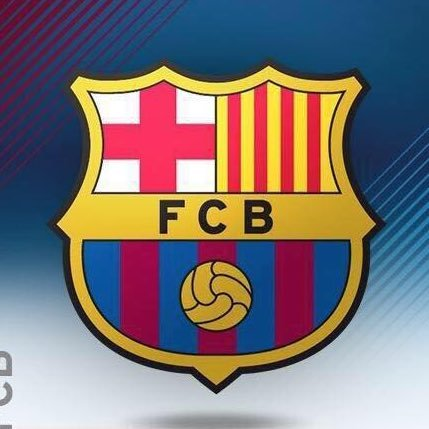
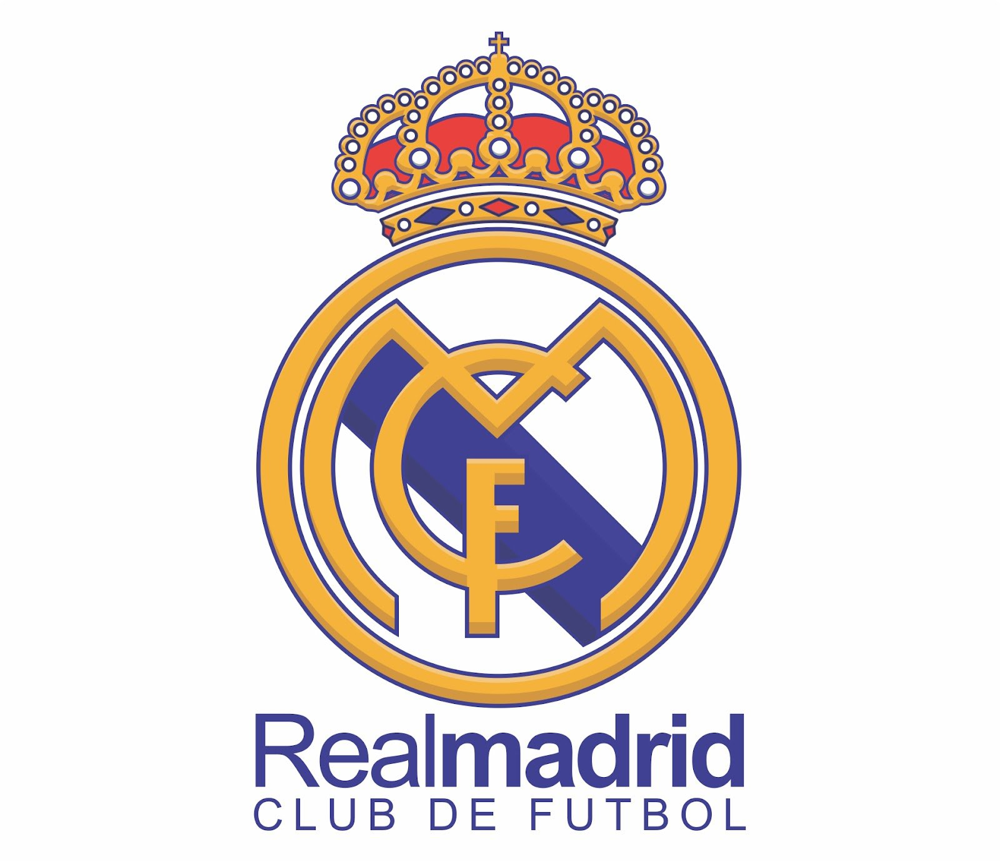
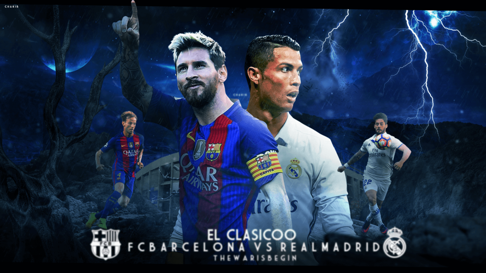
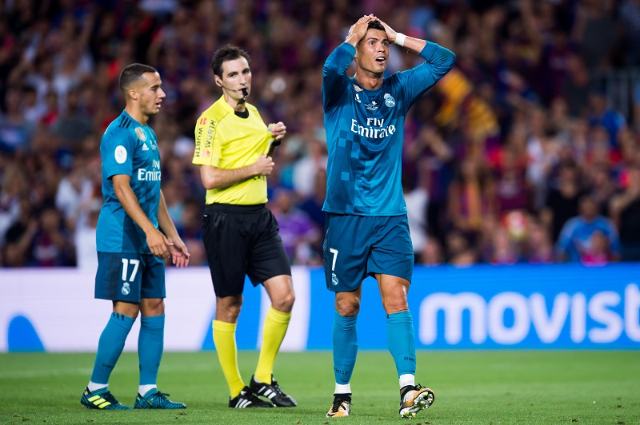

<< FC Barcelona  vs  REAL MADRID C.F>>

Ronaldo sent off in the previous Clasico!
Crisitiano Ronaldo 4 times ballon d'or holder had a pretty surprising clasico the last time.
The Los Blancos main man scored an amazing goal from outside the box after dribbling past Gerard Pique.
Minutes later he was sent off after the refree thought he had been pushed by the Real Madrid glitterati!
